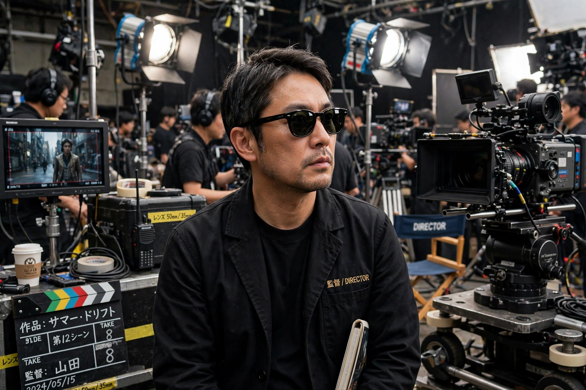

| Takashi Miike | |
| Born | August 24, 1960, Yao, Osaka, Japan |
|---|---|
| Occupation | Film director, screenwriter, actor |
| Years active | 1991–present |
| Notable work | Audition, Ichi the Killer, 13 Assassins |

Takashi Miike (三池 崇史, Miike Takashi; born August 24, 1960) is a Japanese film director of extraordinary prolificacy, having directed well over one hundred features across genres from yakuza crime and extreme horror to family films and samurai epics. Films such as Audition (1999) and Ichi the Killer (2001) made him a defining figure of Asian "extreme cinema".
Raised in Osaka in a family of Korean descent, Miike studied under Shōhei Imamura at the Yokohama film school Imamura founded, and served as Imamura's assistant director. He began in the early 1990s in direct-to-video "V-Cinema", where tight schedules and creative freedom suited his speed. His Black Society trilogy and Dead or Alive (1999) built a cult following; Audition, a slow-burn horror film, broke through internationally at Rotterdam and remains his most acclaimed work.
Miike has moved restlessly between ultraviolence and gentleness: the musical horror-comedy The Happiness of the Katakuris (2001), the children's adventure The Great Yokai War (2005), courtroom drama Ace Attorney (2012), and the classical samurai films 13 Assassins (2010) and Hara-Kiri: Death of a Samurai (2011), the latter premiering in competition at Cannes. In 2006 his Masters of Horror episode "Imprint" was deemed too disturbing for American television broadcast.
Miike's films frequently center on outsiders — immigrants, orphans, mixed-heritage families — and treat stylistic rupture and tonal whiplash as signatures. He has said he simply accepts the projects that interest him and refuses to calculate an audience.